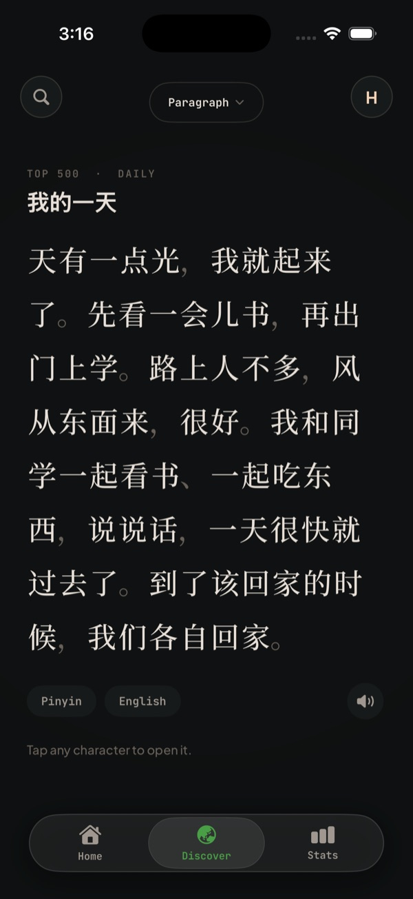
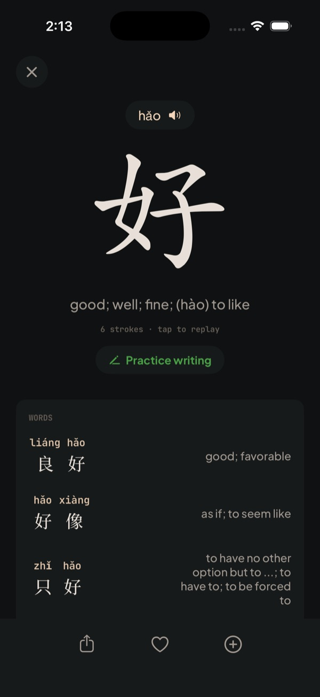
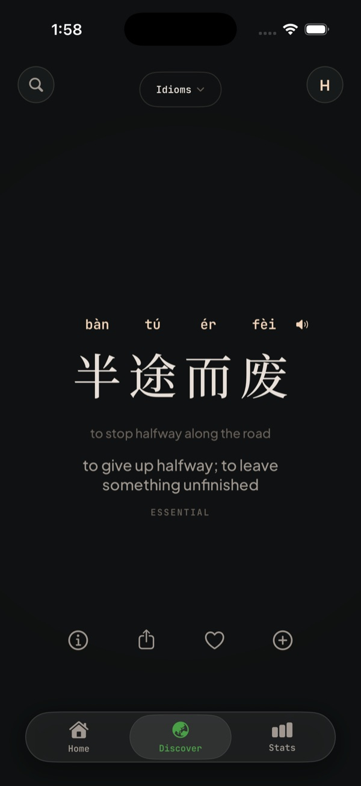

Read 99% of everyday Chinese.
Learn the 3,000 characters that matter, in the order they actually appear in real text — so the first hundred you learn are already 43% of everything you'll read. A few minutes a day. Free to start.
- Spaced repetition for flashcards (same as Anki)
- 9,000+ HSK words
- Works offline






的 #1
The right order
Textbooks teach by topic. Real Chinese is skewed: 100 characters cover 43% of text, 500 cover 78%, 1,000 cover 90%. HanziHunter teaches in that order, so reading starts early.
忘 wàng · forget
Reviews that land on time
The same spaced-repetition scheduler as Anki (FSRS). Each character comes back just before you'd forget it, so you spend minutes, not hours.
读 dú · read
Reading from day one
Short passages written only with the characters you've learned. Tap any character to open it. Pinyin and English stay hidden until you ask.
Three thousand characters, one at a time,
in the order that pays off soonest.